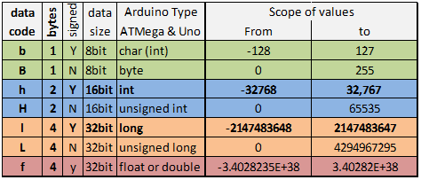

Hi
As i just got reliable output from my heat meter i'm trying to merge it in to sketch so i can log it with emoncms
sketch_sep05a cantains just enough to print the data to serial out
sketch_sep06a is my attempt to merge the first one with a sketch that messures electricity with a "blinker" (10000 blinks each kw/h)
there is one section from the first that i cant figure how and where to insert... of course its the part that reads the data from the meter and prints it to serial
anyone can give a bit of guidiance?
// kamReadReg - read a Kamstrup register
float kamReadReg(unsigned short kreg) {
byte recvmsg[30]; // buffer of bytes to hold the received data
float rval; // this will hold the final value
// prepare message to send and send it
byte sendmsg[] = { 0x3f, 0x10, 0x01, (kregnums[kreg] >> 8), (kregnums[kreg] & 0xff) };
kamSend(sendmsg, 5);
// listen if we get an answer
unsigned short rxnum = kamReceive(recvmsg);
// check if number of received bytes > 0
if(rxnum != 0){
// decode the received message
rval = kamDecode(kreg,recvmsg);
// print out received value to terminal (debug)
Serial.print(kregstrings[kreg]);
Serial.print(": ");
Serial.print(rval);
Serial.print(" ");
Serial.println();
return rval;
}
}
Re: Merging 2 sketches...
of course also a stack of errors.. libs required should be installed... they pop up as imported libs... see attached pic for the folders
sketch_sep06a:103: error: expected primary-expression before '?' token
sketch_sep06a:103: error: expected primary-expression before '?' token
sketch_sep06a:103: error: expected primary-expression before ',' token
sketch_sep06a:103: error: expected primary-expression before '?' token
sketch_sep06a:103: error: expected primary-expression before '?' token
sketch_sep06a:103: error: expected primary-expression before ',' token
sketch_sep06a:103: error: expected `:' before ')' token
sketch_sep06a:103: error: expected primary-expression before ')' token
sketch_sep06a:103: error: expected `:' before ')' token
sketch_sep06a:103: error: expected primary-expression before ')' token
sketch_sep06a:103: error: expected `:' before ')' token
sketch_sep06a:103: error: expected primary-expression before ')' token
sketch_sep06a:103: error: expected `:' before ')' token
sketch_sep06a:103: error: expected primary-expression before ')' token
sketch_sep06a.ino: In function 'void setup()':
sketch_sep06a:116: error: expected primary-expression before '?' token
sketch_sep06a:116: error: expected primary-expression before '?' token
sketch_sep06a:116: error: expected primary-expression before ',' token
sketch_sep06a:116: error: expected `:' before ')' token
sketch_sep06a:116: error: expected primary-expression before ')' token
sketch_sep06a:116: error: expected `:' before ')' token
sketch_sep06a:116: error: expected primary-expression before ')' token
sketch_sep06a:117: error: expected primary-expression before '?' token
sketch_sep06a:117: error: expected primary-expression before '?' token
sketch_sep06a:117: error: expected primary-expression before ',' token
sketch_sep06a:117: error: expected `:' before ')' token
sketch_sep06a:117: error: expected primary-expression before ')' token
sketch_sep06a:117: error: expected `:' before ')' token
sketch_sep06a:117: error: expected primary-expression before ')' token
sketch_sep06a:120: error: expected primary-expression before '?' token
sketch_sep06a:120: error: expected primary-expression before '?' token
sketch_sep06a:120: error: expected primary-expression before ',' token
sketch_sep06a:120: error: expected `:' before ')' token
sketch_sep06a:120: error: expected primary-expression before ')' token
sketch_sep06a:120: error: expected `:' before ')' token
sketch_sep06a:120: error: expected primary-expression before ')' token
sketch_sep06a:121: error: expected primary-expression before '?' token
sketch_sep06a:121: error: expected primary-expression before '?' token
sketch_sep06a:121: error: expected primary-expression before ',' token
sketch_sep06a:121: error: expected `:' before ')' token
sketch_sep06a:121: error: expected primary-expression before ')' token
sketch_sep06a:121: error: expected `:' before ')' token
sketch_sep06a:121: error: expected primary-expression before ')' token
sketch_sep06a.ino: In function 'void loop()':
sketch_sep06a:151: error: 'kamReadReg' was not declared in this scope
sketch_sep06a:155: error: expected primary-expression before '?' token
sketch_sep06a:155: error: expected primary-expression before '?' token
sketch_sep06a:155: error: expected primary-expression before ',' token
sketch_sep06a:155: error: expected primary-expression before '?' token
sketch_sep06a:155: error: expected primary-expression before '?' token
sketch_sep06a:155: error: expected primary-expression before ')' token
sketch_sep06a:155: error: expected `:' before ')' token
sketch_sep06a:155: error: expected primary-expression before ')' token
sketch_sep06a:155: error: expected `:' before ')' token
sketch_sep06a:155: error: expected primary-expression before ')' token
sketch_sep06a:155: error: expected `:' before ')' token
sketch_sep06a:155: error: expected primary-expression before ')' token
sketch_sep06a:155: error: expected `:' before ')' token
sketch_sep06a:155: error: expected primary-expression before ')' token
sketch_sep06a:174: error: 'send_rf_data' was not declared in this scope
sketch_sep06a:175: error: 'emontx_sleep' was not declared in this scope
Re: Merging 2 sketches...
It looks to me as if kamSend() is sending a request for data to your heat meter, and kamReceive() is checking to see if anything has come in, and if it has, it decodes it.
So you need to split that into two. The 'send' part needs to be done whenever you want to get the data - say on a timer - and the 'receive' part needs to be done every time around the main loop (because it will drop through is there's no data). When you have got the data, you can copy the data into the transmit structure and send it to emonCMS.
The code you want is going to be very much like the way the nanodeRF asks for and receives the time from the server, so you can look at that code to see how that is handled.
Re: Merging 2 sketches...
you are almost right...but its kamReadReg that triggers things and also that one that prints the data...
serial out in arduino ide looks like this:
Energy: 102,47
Current Power: 0
Temperature t1: 35,32
Temperature t2: 30,86
Temperature diff: 4,46
Flow: 0
Volumen 1: 1208,96
Volumen 2: 0
also its from kamReadReg that the calls to send and receive is done....
Re: Merging 2 sketches...
i skipped the heat meter part so now it will only print to serial
one error thou and i cant figure whats wrong, my fault of course but cant figure it
sketch so far attach
error:
sketch_sep06a.ino: In function 'void loop()':
sketch_sep06a:174: error: 'send_rf_data' was not declared in this scope
sketch_sep06a:175: error: 'emontx_sleep' was not declared in this scope
Re: Merging 2 sketches...
ahh, forgot to save emontx_lib.ino in same folder
so now just left to figure how to get the data from the heat meter send to emoncms
Re: Merging 2 sketches...
moved read of DS chip etc up in same section as read of meter, in the end it makes more sense to read the meter every say 10 sec and at same time collect temp from DS chip and get numbers from the pulse input
still i cant get my head arround how to put the numbers from the meter in to the correct variables...
and also i need to take LED stuff out of this line: digitalWrite(PIN_LED, digitalRead(PIN_KAMSER_RX));
new sketch attached
Re: Merging 2 sketches...
Why can't you get the numbers from the meter in to the correct variables? What you need to find out is where the numbers come from, and where you want them to go to.
I think they come out of line 200 or thereabouts. You need to analyse that bit of code and work out what it's doing. The function on that line rval = kamDecode(kreg,recvmsg); takes two values in and returns one value. It's obviously called several times with different inputs, so how can you use that knowledge to put the returned value (because that's obviously the number you require) into the right place each time? (Hint 1: Where does the literal string "Temperature t1" come from, and what controls which string is printed? Hint 2: look at using a "Switch" statement).
Re: Merging 2 sketches...
first of all the sketch that gets the data and just prints them to serial is not my work... its the work of the guy who figured the optical ir head...
these strings are some i made up so that the data from the meter can be send in same fashion like temp and data from the blinker on the electricity meter....
int Energy;
int CurrentPower;
int Temperaturet1;
int Temperaturet2;
int Temperaturediff;
int Flow;
int Volumen1;
int Volumen2;
the names are the same as thou the heater meter uses but without spaces.... i just thought i would need this anyway
but the same ones with spaces does not come from the meter itself, .....
word const kregnums[] = { 0x003C,0x0050,0x0056,0x0057,0x0059,0x004a,0x0044 };
char* kregstrings[] = { "Energy","Current Power","Temperature t1","Temperature t2","Temperature diff", "Flow", "Volumen 1" };
what is done is that you ask the meter for register data in form of some hex values.... the first one 0x003C is Energy.
so from what i understand is that you build up a string of these hex values and send them off and the meter will return them...
when it returns the data i guess the first vavlue is simply paired with the first string...
but to make it short your suggestion is above my skills... so i kind of hoped not to be direct spoon feed but so strong pointers that i could guess my way through it...
but well i will get it one way or the other and then i will order the hardware
might be that the guy that made the ir interface will help me out
Re: Merging 2 sketches...
but yes looking at your suggestion twice...
logical i must put in the numbers in the strings as they are decoded and printed to serial...
hmm... will thinker a bit on that
Re: Merging 2 sketches...
ahh... just a thought
// print out received value to terminal (debug)
Serial.print(kregstrings[kreg]);
Serial.print(": ");
Serial.print(rval);
Serial.print(" ");
Serial.println();
return rval;
}
before return rval line, put in the vavlue of rval in the first string variable of thse:
int Energy;
int CurrentPower;
int Temperaturet1;
int Temperaturet2;
int Temperaturediff;
int Flow;
int Volumen1;
int Volumen2;
are my logic far off?
Re: Merging 2 sketches...
Bo, I'm trying to teach you how to find your way through the software!
OK, you're getting close.
What does kreg do? What is the link between kreg and the string it prints at the terminal to tell you what the quantity is?
What is rval - is it always the same variable coming back from the meter, or is it the variable that's being decoded at this instant?
Re: Merging 2 sketches...
kreg is the registers in the meter...
yes rval is the register value that is beeing decoded.... in the start of the sketch its told how many registers you ask for
#define NUMREGS 7 // Number of registers above
and it will also reply in the order you ask for them
word const kregnums[] = { 0x003C,0x0050,0x0056,0x0057,0x0059,0x004a,0x0044 };
you pair that with the names to make it a bit meaingfull
char* kregstrings[] = { "Energy","Current Power","Temperature t1","Temperature t2","Temperature diff", "Flow", "Volumen 1" };
now i'm guessing the sketch, but you ask for the data and loops the amount of registers that have been asked for
// poll the Kamstrup registers for data
for (int kreg = 0; kreg < NUMREGS; kreg++) {
kamReadReg(kreg);
so it will jump back and forth to this part 7 times
// kamReadReg - read a Kamstrup register
float kamReadReg(unsigned short kreg) {
byte recvmsg[30]; // buffer of bytes to hold the received data
float rval; // this will hold the final value
// prepare message to send and send it
byte sendmsg[] = { 0x3f, 0x10, 0x01, (kregnums[kreg] >> 8), (kregnums[kreg] & 0xff) };
kamSend(sendmsg, 5);
// listen if we get an answer
unsigned short rxnum = kamReceive(recvmsg);
// check if number of received bytes > 0
if(rxnum != 0){
// decode the received message
rval = kamDecode(kreg,recvmsg);
// print out received value to terminal (debug)
Serial.print(kregstrings[kreg]);
Serial.print(": ");
Serial.print(rval);
Serial.print(" ");
Serial.println();
return rval;
}
total nuts or does it get warmer?
and sorry for this teaching, but i'm a real idiot at writing code... have tried to learn it but have always ended hacking bits together....
Re: Merging 2 sketches...
You are a little bit closer, but you are missing the point I am trying to get to. Almost everything you need to look at is in those debug print statements, so concentrate your attention there. What does Serial.print(kregstrings[kreg]); print when kreg=0, 1, 2, ... ? What does that tell you about what rval represents?
Writing code is not difficult - I agree there are a few keywords and constructs to remember (but in C there are a lot fewer than most languages), the main part is just a matter of following the variables through in a logical manner. When you've got the solution, I'll tell you exactly how I solved it.
Re: Merging 2 sketches...
all i can figure so far is that rval gets updated on each pass of the 7 times i jumps back and forth to get the data....
not sure i ever get the point of it but will keep looking at it
Re: Merging 2 sketches...
You wrote "serial out in arduino ide looks like this:
Energy: 102,47
Current Power: 0
Temperature t1: 35,32
Temperature t2: 30,86
Temperature diff: 4,46
Flow: 0
Volumen 1: 1208,96
Volumen 2: 0 "
Here is the question I asked myself when I started to look at your problem: How does this get printed? Which print statement prints which part of each line, and what is the value of each variable for each line that is printed?
Because the values you want are in there - the answer must also be in there.
Re: Merging 2 sketches...
of course the answer is in there and i know approx how it works...
you send of one string to the meter where you ask for data on one or more registers...
it will then send back the data... you first decode the first part and then print it... you then go back and decode the next bit and then back and print that...
hmm a wild guess here... since we know that order the data comes.... could we get away with another section like this one:
for (int kreg = 0; kreg < NUMREGS; kreg++) {
kamReadReg(kreg);
and place it here where the empty lines are:
// print out received value to terminal (debug)
Serial.print(kregstrings[kreg]);
Serial.print(": ");
Serial.print(rval);
Serial.print(" ");
Serial.println();
return rval;
we know that first time we enter the loop rval will hold the energy figure... next time we run the loop it will have current power... and so on... when we run that loop for the 7th time it should print the Volume number...
but just guessing here...
Re: Merging 2 sketches...
"but just guessing here..." Indeed you are. And you have not answered the question that pointed you towards the answer. There is no need to read anything again - you already have all the information that you need.
"you send of one string to the meter where you ask for data on one or more registers..." - True, but not relevant.
"it will then send back the data... you first decode the first part and then print it..." Let us stop there. When you print it, what do you know about the values in the print statement at that point? I am trying to get you to work out - from knowing what is printed at the terminal and knowing the code that does the printing, plus knowing how the words are defined up in line 29, what is the actual value in each of the variables in that code.
Re: Merging 2 sketches...
that is what is over my head.... i just know that first time it goes through the decode thing its energy etc etc...
but time to study the inside of my eyelids.... need to reasonable fresh and awake tomorrow
but will poke my mind some more in the afternoon... not any gurantee that i ever get it
Re: Merging 2 sketches...
OK, here's how to do it:
Laying it out so that you can see and compare:
Serial.print(kregstrings[kreg]); Serial.print(": "); Serial.print(rval); Serial.print(" "); Serial.println(); Energy : 102,47That tells me that "kregstrings[kreg]" is "Energy". Look at line 29 where this is defined:
char* kregstrings[] = { "Energy","Current Power","Temperature t1","Temperature t2","Temperature diff", "Flow", "Volumen 1" };
"Energy" is element 0 in the array, therefore to print "Energy", the value of kreg was zero. Therefore this time around the loop, when kreg is zero, rval holds the value for Energy. When kreg holds the value 3, what does rval represent? - Temperature t2. (Can you see why?)
Therefore, what you need is a piece of program that allocates the value in rval to the appropriate variable in the emontx structure according to the value of kreg.
This is what I think you need, after:
// decode the received message
rval = kamDecode(kreg,recvmsg);
switch (kreg) {
case 0 : emontx.Energy = rval;
break;
case 1 : emontx.CurrentPower = rval;
break;
case 2 : emontx.Temperaturet1 = rval;
break;
case 3 : emontx.Temperaturet2 = rval;
break;
case 4 : emontx.Temperaturediff = rval;
break;
case 5 : emontx.Flow = rval;
break;
case 6 : emontx.Volumen1 = rval;
break;
case 7 : emontx.Volumen2 = rval;
break;
}
// print out received value to terminal (debug)
If you have not met "switch" - read up about it! Depending on kreg, it branches to one of the cases and executes what it finds there, 'break' makes it break out and not do the cases below. So it goes on and prints the debugging statements.
Beware - if you have the 8th value (Volumen2), you MUST add that to the definition of kregstrings, else your program will most likely crash when it tries to print the string that does not exist.
Re: Merging 2 sketches...
dooh yes...
i see some light at the end of the tunnel...
kreg is the counter... so yes..... i feel a bit like a fool now...
i did remove volumen2 from the sketch as it will always be 0, it meant to count cold water if a pulse device is attached to the meter... in my case not...
http://openenergymonitor.org/emon/sites/default/files/sketch_sep06a_1.ino
will have a look at your post again tomorrow when less knackered...
Re: Merging 2 sketches...
have been looking at i cant belive that it was right under my nose the whole time...
had i just seen what kreg did i would have been so much closer...
of course this will increment by one at each pass and you just have to put rval in the variables at the right time
*giving myself an good slap in the face*
going to order the emontx v2, should be plenty enough for the role
Re: Merging 2 sketches...
looked through the code some times... made empty lines the same and moved comments to the right...
could it be worthy as an "official" example when its been tested on hardware? glyn says they ship a huge box today or tomorrow
Re: Merging 2 sketches...
starting to clean up and adjust the sketch so i can start log tonight (with a dash of luck)
what does this line do?
#include <avr/wdt.h>
i know it loads a lib but what is its function?
Re: Merging 2 sketches...
watch dog timer of course----
my guess it makes sure that the unit does not get stuck... so if there is to long time between the watchdog is reset it will reboot?
if (UNO) wdt_enable(WDTO_8S);
does that set the interval to 8 sec? so if i transmit say every 5 mins i have to adjust here ?
Re: Merging 2 sketches...
So i tried to clean it up as best i could
Sketch attached....
But are there room for improvement?
Re: Merging 2 sketches...
Almost success
serial output from from arduino IDE:
0 W
0 Pulses
Hot water cylinder is 2612 Degrees C
Total energy consumed on district hot water: 102 Gj
Current energy consumption on district hot water: 0 Kw
Incomming temp on district hot water: 35 Degrees C
Outgoing temp on district hot water: 34 Degrees C
Difference in temp on district hot water: 1 Degrees C
Curre€ÿ€€€ÿÿÿÿÿz¹ ‘¥ÍÑÉ¥ Ñ ë‹ÿ water: 0 Ltr./h
Total volumen: 1213 M3
2nd line from buttom... i cant quite figure why these bogus signs show up...
when it prints to serial it pauses right there and then prints the rest on the next go....
Re: Merging 2 sketches...
Sending an RF message shortly after using Serial.print() can mess up the display.
If you comment out the send_rf_data() line or equivalent, this symptom may go away ...
Re: Merging 2 sketches...
oki, will try it after dinner is over
Re: Merging 2 sketches...
the lenght of bogus chars are now down to 3
i commencted out the send rf line... think i will need a delay also
Re: Merging 2 sketches...
delay sorted it... 100ms was enough
sketch with RF commented out attached
is there anything i can do to improve it and make it so it could become a example on git ?
Re: Merging 2 sketches...
You asked....
You don't use the array char* units[65], so that can all go.
It might be clearer if you called your temperatures "TemperatureT1" etc - but that's a personal preference.
"Kamstrup Stuff Start" should be "end" in line 108.
You probably need to warn that 57600 Baud needs to be set in the IDE - we normally use 9600.
We spell the word "Incoming".
Are you happy with sending the temperatures in degrees? Would it be better to multiply rval by 10 when assigning to TemperatureT1 etc, and send tenths of a degree, to give better precision?
Re: Merging 2 sketches...
oki...
yep i had a few thoughts after i got to bed...
but array char is deff one of them.... i guess it has just stayed as a place holder for what the kamstrup protocol has to offer, but its not all meters that have all those numbers... electricity meters from kamstrup have some of them but not all, and the heat meters have others etc etc...
so off it goes....
also correcting temperatures....
as for BAUD... is there much difference in the speed i use versus 9600 ? i could go down to 9600 if it does not matter
Incoming will be corrected too...
hehehe... funny you should mentioned if i'm happy.... last thing i noted before going to sleep was that is sends the temp in whole numbers and not with decimals or at least as a 4 digit number i can process in emoncms... same goes for the temp probe in the hot water cylinder... but that is my own fault
time for breakfast as i edit
Re: Merging 2 sketches...
btw... should i not multiply rval by 100 to get 4 digits numbers just like when doing a ds18b20 ?
Re: Merging 2 sketches...
so i had a small play with it..
baud is still unchanged but can change it if the speed does not matter
new sketch attached
Re: Merging 2 sketches...
now that i got data in to emoncms there is one clear thing
total vol on the meter is a 4 digit number with 2 decimals... but on emoncms it becomes a negative number...
i assume the order of the inputs in emoncms is the same as transmit order
i opted to multiply rval with 100, but maybe it should really only be 10?
Re: Merging 2 sketches...
now multiplying by 10 and the number is now positive but 1 decimal missing...
what can i do to get the last one?
Re: Merging 2 sketches...
total vol on the meter is a 4 digit number with 2 decimals... but on emoncms it becomes a negative number...
So biggest possible number is 9999,99?
Try to split the value into two parts (e.g. integer part and decimal part) and send as two values. Recombine on Emoncms side.
Re: Merging 2 sketches...
yep that is the biggest number....
just need to find an example on how to split it and copy the idea in to my sketch
Re: Merging 2 sketches...
Something like this:
Not very 'clean' but should work.
Re: Merging 2 sketches...
If you put a long integer in your Payload structure, it is still transmitted as byte values. Inside emoncms, those bytes are interpreted two at a time as 2-byte integers. If you have a long integer, it takes up 4 bytes, the same space as two short integers, therefore inside emoncms the maths you need is [first value] + 65536 x [second value]. But beware the sign bit on [first value], which you need to ignore, so test for a negative first and add 65536 if so.
Re: Merging 2 sketches...
If you are using emonhub you are no longer tied to using just signed ints. you can use several data types and emonhub will decode them if you set the "datacodes" string for the node in the [nodes] section of emonhub.conf
So you could use a signed long instead of a signed int then you can multiply your float value by 100 in the sketch and multiply by 0.01 in the input processing of emoncms. ( a future version of emonhub will do scaling also but for now use emoncms )
Assuming for the moment you only need to change the one value you could change your existing payload to
and that values "case" line in the sketch to
In emonhub.conf [nodes] section
This will tell emonhub to decode all node 5's packets as 9 ints and a long rather than the default all ints.
It sound more complex than it is, basically you are just setting the payload structure in your sketch before tx over rf then telling emonhun what that structure is so that it can defode the rf packet (payload)
Until fairly recently all sketches only used ints and all rfm2pi software decoded packets assuming they consisted only of ints so emonhub defaults to ints for compatability but you can use many data types now see
http://openenergymonitor.org/emon/node/5289 for more info 
Paul
EDIT - Sorry Robert, took me a while to write and you've posted in the meantime
Re: Merging 2 sketches...
Oh, this is very nice to know!
Then it would be even easier (faster) to send the float value and use the f parameter in datacodes ?
Re: Merging 2 sketches...
i didn't suggest that as I have not yet tested floats and whilst researching how to do these data conversions I was put off using floats altogether by the way they work in 0.125's rather than 0.1's it just seems horrendous to me so I like the scaling option. but please by all means give it a try I would love to know if its worth keeping the float option in emonhub.
Paul
Re: Merging 2 sketches...
i use the low write version of emoncms.... but i have edited emonhub.conf so i guess its emonhub still....
will test it either tomorrow or during the week...
Re: Merging 2 sketches...
but please by all means give it a try .....
I have created a kWh counter with 0.001kWh resolution and send the value as float, decoded with f option and it works!!!
Resolution in Emoncms is 0.01 (value shown in Inputs!) but the value is decoded correctly.
Crosschecked with a constant float value of 876.5432 which is also decoded correctly.
So, please keep the float option :-))
Re: Merging 2 sketches...
Fantastic, thanks for trying that Jörg. I guess floats are staying then :-)
In which case boelle, you should be able to just change the payload to define a float data type
and add the datatypes for node 5 to emonhub.conf
Re: Merging 2 sketches...
So i dont need to alter the case stuff? ie
case 6 : emontx.Volumen1 = (long)(rval*100+0.5);
?
i wondered why add 0.5 ?
Re: Merging 2 sketches...
i wondered why add 0.5 ?
(long)1.943 = 1
(long)(1.943+0.5) = (long)2.443 = 2
Conversion from float to Integer truncates. You get the nearest integer by adding 0.5 before conversion.
You can do a similar thing in integer divisions:
instead of:
val = val/980;
you get a 'better' (= nearer) result by doing:
val = (val+980/2)/980;
Re: Merging 2 sketches...
so let's say rval is 15.34 there is no way i can get that exact number to emoncms?
i just chekced up on the sketch and rval is a float... so could i get by changing all variables that i send to emoncms to floats also?
ie:
int power; // power
int pulse; // pulses
int temp; // temperature of hotwater cylinder
//********************************************Kamstrup Stuff Start********************************************
float Energy;
float CurrentPower;
float TemperatureT1;
float TemperatureT2;
float TemperatureDiff;
float Flow;
float Volumen1;
i also discovered that temp is a float further down:
float temp=(sensors.getTempCByIndex(0));
should i correct the first temp to float also? just to keep it the same
Re: Merging 2 sketches...
also i saw these 2 lines:
digitalWrite(PIN_LED, digitalRead(PIN_KAMSER_RX));
delay(1000);
that adds 1 sec of delay... could i get rid of it without much trouble? i pull data at 5 sec interval allready and this delay would really make it 6 right?
Re: Merging 2 sketches...
so let's say rval is 15.34 there is no way i can get that exact number to emoncms?
there are different ways to transfer this value 'exactly' to Emoncms:
- multiply by 100: 15.34*100 = 1534.0, convert to integer long with (long)(1534.0+0.5) and transfer as integer long
- transfer as float (with the f option on the input decoder as described above)
You may change every value to float but float calculations in general need much more processing time (and double the space) compared to 16 bit integers. And if the range of possible values is small, this is simply overkill.
(and the 'accuracy' of a float variable is exactly the same as that of a long, because both use 4 bytes and can have 2^32 possible different values)
Re: Merging 2 sketches...
i pull data at 5 sec interval allready and this delay would really make it 6 right?
Yes, if you do it like this (taken from your sketch):
if(millis() - lastpoll > POLLINTERVAL or lastpoll == 0) { // poll the Kamstrup registers for data for (int kreg = 0; kreg < NUMREGS; kreg++) { kamReadReg(kreg); delay(100); } digitalWrite(PIN_LED, digitalRead(PIN_KAMSER_RX)); delay(1000); // update lastpoll lastpoll = millis(); ...... }The 'real' poll interval will be at least POLLINTERVAL + (100*NUMREGS) + 1000 ms. I would not do it this way but rather like this:
uint32_t tmpL = millis() if(tmpL - lastpoll >= POLLINTERVAL or lastpoll == 0) { // update lastpoll lastpoll = tmpL; // poll the Kamstrup registers for data for (int kreg = 0; kreg < NUMREGS; kreg++) { kamReadReg(kreg); delay(100); } digitalWrite(PIN_LED, digitalRead(PIN_KAMSER_RX)); delay(1000); ......}
This gives an exact polling intervall of POLLINTERVAL ms (as long as the code within the if clause takes less than POLLINTERVAL ms processing time). I think you can see the difference.
Re: Merging 2 sketches...
Re: Merging 2 sketches...
or are the 2 temps different ones?
Re: Merging 2 sketches...
Which 2?
Are you talking about the member 'temp' in the payload struct emontx? This is for sure a completely different variable than the float temp declared further down in the sketch.
But, in your sketch you first read the temperature value from the sensor into the float variable temp and then immediately 'copy' it into the struct member emontx.temp, which is an int:
This gives the same result as if you directly read into emontx.temp:
emontx.temp=(sensors.getTempCByIndex(0));
Now it is your decision if you change the type of emontx.temp from int to float. But if you do, you have to inform the decoder in emonhub that you are sending a float (f option).
Re: Merging 2 sketches...
Depending on the range you need, if you could also use
in place of those 2 lines, then you would get a range of -327.68 to 327.67 by just multiplying by 0.01 in emoncms and only use 2bytes rather than 4.
Paul
Re: Merging 2 sketches...
yep...
it was those 2.. i was just unsure about it.... dont want to screw things up more than need be :-D
Re: Merging 2 sketches...
i tend to like the float option... thou it might be overkill.... but it makes life simple :-D at cost ot space
Re: Merging 2 sketches...
so i'm trying to float option and the feed values are right... ie my hot water temp is 38.94
total energy is 102.67 but in the input list its shown as 103... the temp above is shown as 38.9
another is the incoming temp, feed value is 34.56 but is shown as 34.6
the dashboard seems odd... one of the temp dials for district heating is 2 decimals and the others are not
temp gauge on the hot water cylinder is also only single decimal...
are there some rounding off going on? or can i decide how many decimals to use?
Re: Merging 2 sketches...
also my kwh is now negative... i i have set up an input processor that takes watt and turns then to kwh...
Re: Merging 2 sketches...
deleted the kwh feed and processor and created them again... so far it seems ok
Re: Merging 2 sketches...
also my kwh is now negative...
If this happens after a reboot, this could be due to a bug in the pre-configured image. I had this a couple of times now. Paul (pb66) and I tried to find the reason for it and it seems that it is due to missing real time information in the first seconds after reboot and before time information is fetched via ntp.
Re: Merging 2 sketches...
attached are pics of the temp list... and a pic of the feed value for one of them... why is it 1 decimal on the list but when you look at feed value is not?
Re: Merging 2 sketches...
This is just how someone (Trystan) decided to present the values.
If you use the values on your dashboards, you can decide how many decimals you want (possibly not for all widgets but for example for the 'feedvalue' widget).
Re: Merging 2 sketches...
you can decide how many decimals you want
how do decide that? i want it to be 2 decimals for most of it...
Re: Merging 2 sketches...
in fact i would like the 2 decimals on both input list, feed list and on dashboard
Re: Merging 2 sketches...
But input list and feed list are for 'internal' use only.
On the dashboard the 'feedvalue' widget has a parameter for the number of decimals. Similar settings can be done for a number of other visualizations.
Re: Merging 2 sketches...
well the dial vis does not have it... but sometimes it shows 2 deciamls and some times it does not
and the same comes with the value in the feed and input list... some are 2 decimals and some are 1....
*sigh*
Re: Merging 2 sketches...
http://energymonitor-dk.dns4e.net/emoncms/boelle/heat
look and the temp in and out and diff... there are not settings for decimals and yet they differ...
try and compare that with my pic of the feed list... strange right?
Re: Merging 2 sketches...
well the dial vis does not have it... but sometimes it shows 2 deciamls and some times it does not
Yes, thats right. The dials have no settings for decimals. This is why I wrote that only some of the widgets have these settings.
look and the temp in and out and diff... there are not settings for decimals and yet they differ...
In the black center of the dials you only have very limited space tp print the number. It would not be possible to print a 4 digit number with 6 decimals. So the code decides how many decimals to print. If the value is below 10, it prints two decimals, between 10 and 100 it prints 1 decimal and above 100 no decimals. But you can easily modify the code to change that.
If you want to understand these things better, look into the code.
try and compare that with my pic of the feed list... strange right?
No, not really. It has been decided to print it this way (and you are free to change it). Similar reasons as with the dial widget. Smaller numbers are printed with more decimals than bigger numbers.
Re: Merging 2 sketches...
ok... and what file should i start to look at to change it for the dials and the cylinder symbol?
Re: Merging 2 sketches...
for example:
/var/www/emoncms/Modules/dashboard/Views/js/widgets/dial/dial_render.js
starting from line 274 there is this code:
if (isNaN(val)) val = 0; else if (val>=100) val = val.toFixed(0); else if (val>=10) val = val.toFixed(1); else if (val<=-100) val = val.toFixed(0); else if (val<=-10) val = val.toFixed(1); else val = val.toFixed(2);which is responsible for the formatting of the printout.
/var/www/emoncms/Modules/dashboard/Views/js/widgets/dial/cylinder_render.js
starting from line 118:
ctx.fillText(cyl_top.toFixed(1)+"C",midx,top_pos); ctx.fillText(cyl_bot.toFixed(1)+"C",midx,bot_pos+15);Re: Merging 2 sketches...
and i guess the number in the () says how many digits total? or is it decimal?
Re: Merging 2 sketches...
Google tells me:
The toFixed() method converts a number into a string, keeping a specified number of decimals.
Re: Merging 2 sketches...
i set it to 3 in all of them and no change... so i must be doing it wrong
Re: Merging 2 sketches...
try to clear the browser cache .....
Re: Merging 2 sketches...
thanks...that did it
and i guess i have to look for the same to change the cylinder?
Re: Merging 2 sketches...
see above!
Re: Merging 2 sketches...
doh yes...
Re: Merging 2 sketches...
oh well....
now the feeds are not saved to graphs does not work...
even tried to delete the feed and create them again...
Re: Merging 2 sketches...
changed everything back
deleted the feeds and recreated them...
still it does not save to disk anymore... ie feed size stays 0 kb
Re: Merging 2 sketches...
i wondered why add 0.5 ?
Conversion from float to Integer truncates. You get the nearest integer by adding 0.5 before conversion.
But in general you'll get it a lot faster if you use the lrint() family of functions rather than force a floating point addition into the mix. When done in software (like on the AVR), a truncate-and-convert-to-int costs about the same as a round-and-convert-to-int, so if you want the rounded version you can save yourself a floating point addition by just asking for it.
In some pre-SSE3 FPU architectures (not an issue for the AVR) a truncate can be extremely expensive because it involves reconfiguring the FPU global rounding mode (with associated pipeline flushes) into truncate mode. In those architectures you really want to avoid a truncate unless of course that's what you're really after. The SSE3 introduced a truncate instruction which removed that quirk. But even then, you can still avoid a floating point addition by calling for rounding when you want rounding.
A quick test on the AVR reveals:
Volumen1 = lrintf(rval*100.0);
is way faster than
Volumen1 = (long)(rval*100.0+0.5);
Re: Merging 2 sketches...
Volumen1 = lrintf(rval*100.0);
is way faster than
Volumen1 = (long)(rval*100.0+0.5);
Good to know (although I try to avoid floats at all). In which library are these functions buried?
EDIT: Ok, found it. lrint is included in math.h
Re: Merging 2 sketches...
Good to know (although I try to avoid floats at all)
Me too, even on my i7 with the mother of all FPUs, and absolutely on a little AVR. I just did some scope timing of the above 2 statements on a 16MHz AVR and it's roughly 23.6 usecs Vs 15 usecs.
In which library are these functions buried?
Should be in the standard math lib since about C99 I think.
Re: Merging 2 sketches...
this is not the problem right now....
now it will not save the feeds and hence graphs does not work,...
Re: Merging 2 sketches...
and then now it does...
all i did last night was to cold boot... ie power off external hard drive and the pi and this morning i booted and refreshed the feed list and now i grows
Re: Merging 2 sketches...
and now they are 0 again and not growing...
once they all worked i wanted to start fresh data vise so removed all feeds and created them again...
Re: Merging 2 sketches...
what could cause this strange behaveour ?
when i create the power to kwh feed the value of it starts to climb... but the feed size does not...
like something prevents that the feed is saved...
Re: Merging 2 sketches...
also just noted that even thou i send data at approx 5 sec interval the input list can say up to 11 sec between updates...
Re: Merging 2 sketches...
and the issue is the same whatever i choose local ip or wan ip
Re: Merging 2 sketches...
discussion on the not saving issue continues here: http://openenergymonitor.org/emon/node/5811